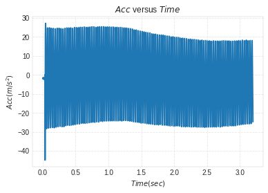
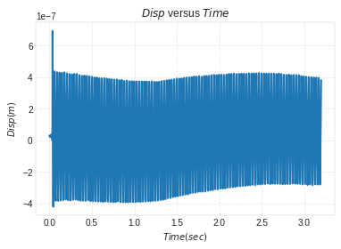
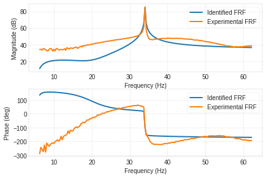
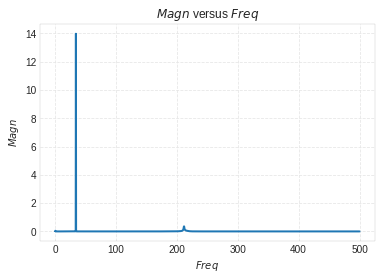
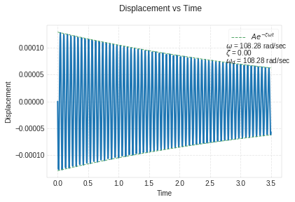

ME 6210 Lab Notes¶
Lab 2¶
Frequency Domain Identification Techniques¶
In [5]:
%load_ext autoreload
%autoreload 2
import vibration_toolbox as vtb
import matplotlib.pyplot as plt
import numpy as np
import scipy.io as sio
import math as math
import scipy.linalg as la
Geometry and Material Properties¶
In [6]:
E=7.31e10 #young's Modulus
b1=0.0254 #width
h=0.0127 #height
l=0.5524 #length
r=2.7*(10**3) #Density
v=l*b1*h #volume
m=r*v #mass
I=(1/12)*b1*(h**3) #Area moment of inertia
n=40#no: of amplitudes to be considered in the experimental plots for analysis
Plotting Experimental Data¶
In [7]:
# Acc vs Time
%matplotlib inline
mat_contents=sio.loadmat('Case2-1.mat')
Time = mat_contents['Time_domain']
b = mat_contents['Time_chan_2']
# The acceleration values from Bobcat will be in Gs. So, to convert them to m/s^2,
# we will have to multiply the vector by 9.81
Acc=b*9.81
plt.plot(Time,Acc)
plt.grid('on')
plt.ylabel('$Acc(m/s^2)$')
plt.xlabel('$Time(sec)$')
plt.title('$Acc$ versus $Time$')
plt.show()

In [8]:
# Disp vs Time
Td= (Time[n]-Time[0])/n
Wd=(2*math.pi)/Td
Disp=Acc/(-Wd**2)
plt.plot(Time,Disp)
plt.grid('on')
plt.ylabel('$Disp(m)$')
plt.xlabel('$Time(sec)$')
plt.title('$Disp$ versus $Time$')
plt.show()

In [24]:
# Mag vs Freq
%matplotlib inline
mat_contents=sio.loadmat('Case2-2.mat')
c = mat_contents['Freq_domain']
d = mat_contents['Hf_chan_2']
H= (20)*(np.log10(np.abs(d)))
Hd = max(H)
#Hb=(Hd)/(2**(1/2))
Hb=Hd-3
print(Hb)
data=plt.plot(c,H)
xvalues = data[0].get_xdata()
yvalues = data[0].get_ydata()
idy = np.where(yvalues == Hd)
print(idy)
x_value = xvalues[idy]
print (x_value)
print (type(x_value))
print ("value is : \n")
print("***********")
plt.grid('on')
plt.xlabel('$Freq,Hz$')
plt.ylabel('$H,dB$')
plt.title('$Magn$ versus $Freq$')
plt.show()
[ 82.22829375]
(array([109]),)
[ 34.0625]
<class 'numpy.ndarray'>
value is :
***********

In [ ]:
Experimental Data Analysis¶
Using Log Decrement¶
In [54]:
delta= (1/n)*(math.log(Disp[0]/Disp[n-1]))
delta
Out[54]:
0.0038640534923340686
In [55]:
Td= (Time[n]-Time[0])/n
Td
Out[55]:
array([ 0.00078125], dtype=float32)
In [56]:
Wd=(2*math.pi)/Td
Wd
Out[56]:
array([ 8042.48095703], dtype=float32)
In [57]:
zeta=(delta)/(math.sqrt((4*(math.pi)**2)+(delta)**2))
zeta
Out[57]:
0.0006149830973818369
In [58]:
Wn=(Wd)/(math.sqrt(1-(zeta)**2))
#wn=Wn/(2*math.pi)
Wn
Out[58]:
array([ 8042.48242188], dtype=float32)
In [59]:
ccr=2*m*Wn
c=ccr*zeta
c
Out[59]:
array([ 4.75924635], dtype=float32)
Using Quadrature Peak Picking¶
In [ ]:
In [66]:
%matplotlib inline
mat_contents=sio.loadmat('Case2-2.mat')
f = mat_contents['Freq_domain']
TF = mat_contents['Hf_chan_2']
Fmin=20
Fmax=200
sdof_cf(f,TF,Fmin,Fmax)

Out[66]:
(0.00086455188716642482, 34.045609316550937, 33.146694682382353)
Frequency Domain¶
In [25]:
# Mag vs Freq
%matplotlib inline
mat_contents=sio.loadmat('Case2-2.mat')
c = mat_contents['Freq_domain']
d = mat_contents['MagSpec_chan_2']
plt.plot(c,d)
plt.grid('on')
plt.xlabel('$Freq$')
plt.ylabel('$Magn$')
plt.title('$Magn$ versus $Freq$')
plt.show()

In [ ]:
k=(3*E*I)/(l**3) #stiffness
k
In [117]:
m=r*v #mass
m
Out[117]:
0.48112161839999995
In [118]:
wn=math.sqrt(k/m)
wn
Out[118]:
108.27873962003879
In [119]:
ccr=2*math.sqrt(k*m)
c=ccr*zeta
c
Out[119]:
0.24698817784097568
Estimated Disp vs Time using Vibration Toolbox¶
In [171]:
vtb.time_plot(m=r*v, c=.2, k=(3*E*I)/(l**3), x0=0, v0=Time[1]*Acc[1], max_time=3.5)

Mode Shapes for Cantilever Beam: (from table 6.6 in the text)¶
In [143]:
# first three mode shapes
%matplotlib inline
beta = np.array([1.87510407, 4.69409113, 7.85475744])
alpha = np.array([0.7341, 1.0185, 0.9992])
x = np.linspace(0, 1, num=1000)
for i in range(0, 3):
X=np.cosh(beta[i]*x)-np.cos(beta[i]*x)-alpha[i]*(np.sinh(beta[i]*x)-np.sin(beta[i]*x))
plt.plot(x, X)
plt.grid('on')
plt.ylabel('$X$')
plt.xlabel('$x$')
plt.title('$X$ versus $x$')
#plt.show()